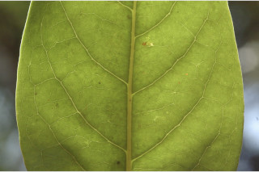
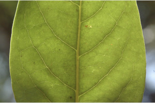

Trees up to 30 m tall.
30 ಮೀ.ವರೆವಿಗೆ ಬೆಳೆಯುವ ಮರಗಳು.
30 മീറ്റര് വരെ ഉയരമുളള മരങ്ങള്.
மரங்கள் 30 மீ. உயரம் வரை வளரக்கூடியது
Bark grey, smooth; blaze orange.
ತೊಗಟೆ ಬೂದು ಬಣ್ಣದಲ್ಲಿರುತ್ತದೆ ಮತ್ತು ನಯವಾಗಿರುತ್ತದೆ.;ಕಚ್ಚು ಮಾಡಿದ ಜಾಗ ಕಿತ್ತಳೆ ಬಣ್ಣದಲ್ಲಿರುತ್ತದೆ.
മിനുസമാര്ന്ന, ചാരനിറത്തിലുളള പുറംതൊലി; വെട്ടുപാടിന് ഓറഞ്ച് നിറം.
மரத்தின் பட்டை சாம்பல் நிறமானது, வழுவழுப்பானது; உள்பட்டை ஆரஞ்சு நிறமானது.
Branchlets terete, glabrous; apical buds small, pubescent without coriaceous scales.
ಕಿರುಕೊಂಬೆಗಳು ದುಂಡಾಗಿದ್ದು ರೋಮರಹಿತವಾಗಿರುತ್ತವೆ; ಅಗ್ರದಲ್ಲಿನ ಅಂಕುರಗಳು ಕಿರಿದಾಗಿರುತ್ತವೆ ಮತ್ತು ತೊಗಲು ಮಾದರಿಯ ಶಲ್ಕೆಗಳನ್ನು ಹೊಂದಿರುವುದಿಲ್ಲ.
അരോമിലമായ ഉരുണ്ട ഉപശാഖകള്; ചെറുതും ശല്ക്കങ്ങളാലാവൃതമായ അഗ്രമുകുളങ്ങള്.
சிறிய நுனிக்கிளைகள் குறுக்குவெட்டுத் தோற்றத்தில் வளையமானது, உரோமங்களற்றது; தண்டின் நுனியிலுள்ள மொட்டு சிறியது, உரோமங்களுடையது, தடித்த செதில்களற்றது.
Leaves simple, alternate, spiral, sometimes subopposite, clustered at twig ends; petioles 1-1.5 cm; lamina 9.5-15 x 3.5-6 cm, elliptic to ovate-lanceolate, apex acute to shortly acuminate with blunt tip, base acute to attenuate, margin entire, glabrous, smooth and shining above, coriaceous; secondary_nerves ca.10 pairs, slender, gradually curved; tertiary_nerves strongly reticulate.
ಎಲೆಗಳು ಸರಳವಾಗಿದ್ದು,ಪರ್ಯಾಯ ಮತ್ತು ಸುತ್ತು ಜೋಡನಾ ವ್ಯವಸ್ಥೆಯಲ್ಲಿ ಅಥವಾ ಕೆಲವು ವೇಳೆ ಉಪ-ಅಭಿಮುಖಿಗಳಾಗಿರುತ್ತವೆ ಹಾಗೂ ಕುಡಿಕೊಂಬೆಗಳ ತುದಿಯಲ್ಲಿರುತ್ತವೆ ; ತೊಟ್ಟುಗಳು 1-1.5 ಸೆಂ.ಮೀ. ವರೆಗಿನ ಉದ್ದವಿರುತ್ತವೆ;ಪತ್ರಗಳು 9.5-15 x 3.5-6 ಸೆಂ.ಮೀ ಗಾತ್ರ ಹೊಂದಿದ್ದು ಅಂಡವೃತ್ತದಿಂದ ಅಂಡ- ಭರ್ಜಿಯ ಆಕಾರದಲ್ಲಿರುತ್ತವೆ. ಪತ್ರದ ತುದಿ ಚೂಪಾಗಿರುವುದರಿಂದ ಹಿಡಿದು ಮೊಂಡಾಗ್ರವುಳ್ಳ ಕ್ರಮೇಣ ಚೂಪಾಗುವ ಮಾದರಿಯಲ್ಲಿರುತ್ತದೆ;ಬುಡ ಚೂಪಾದುದರಿಂದ ಒಳಬಾಗಿದ ಮಾದರಿಯನ್ನು ಹೊಂದಿರುತ್ತದೆ;ಅಂಚು ನಯವಾಗಿರುತ್ತದೆ;ಪತ್ರಗಳ ಮೇಲ್ಮೈ ಕಾಗದವನ್ನೋಲುವ ಮಾದರಿಯಲ್ಲಿದ್ದು ಮೇಲ್ಭಾಗದಲ್ಲಿ ನಯವಾಗಿರುತ್ತದೆ ಹಾಗೂ ಹೊಳಪನ್ನು ಹೊಂದಿ ರೋಮರಹಿತವಾಗಿರುತ್ತದೆ;ಎರಡನೇ ದರ್ಜೆಯ ನಾಳಗಳು ತೆಳುವಾದ 10 ಜೋಡಿಗಳಿದ್ದು ಕ್ರಮೇಣವಾಗಿ ಬಾಗಿರುತ್ತವೆ.ಮೂರನೇ ದರ್ಜೆಯ ನಾಳಗಳು ದೃಢವಾದ ಜಾಲಬಂಧ ನಾಳ ವಿನ್ಯಾಸ ಹೊಂದಿರುತ್ತವೆ.
ലഘുവായ ഇലകള്, ഏകാന്തര ക്രമത്തില്, സര്പ്പിളമായി, ചിലപ്പോള് ഉപസമ്മുഖമായി, തണ്ടുകളുടെ അറ്റത്ത് കൂട്ടമായി അടുക്കിയ വിധത്തിലാണ്; ഇലഞെട്ടിന് 1.1 സെ.മീ മുതല് 1.5 സെ.മീ വരെ നീളം; പത്രഫലകത്തിന് 9.5 സെ.മീ മുതല് 15 സെ.മീ വരെ നീളവും 3.5 സെ.മീ മുതല് 6 സെ.മീ വരെ വീതിയും, ആകൃതി ദീര്ഘവൃത്തംതൊട്ട് അണ്ഡാകാര-കുന്താകൃതിയുമാകാം, മുനപ്പില്ലാത്ത അറ്റത്തോടുകൂടിയ നിശിതമോ ചെറുദീര്ഘമോ ആയ പത്രാഗ്രം, പത്രാധാരം നിശിതംതൊട്ട് സാവധാനം നേര്ത്തവസാനിക്കുന്നതുവരെയാകാം, അവിഭജിതമായ അരികുകള്, അരോമിലം, മിനുസമാര്ന്നതും തിളങ്ങുന്നതുമായ മുകള്ഭാഗം, ചര്മ്മില പ്രകൃതം, സാവധാനം വളയുന്ന, നേര്ത്ത, ഏതാണ്ട് 10 ജോഡി ദ്വിതീയ ഞരമ്പുകള്, ശക്തമായ ജാലിതമായിട്ടുളള ത്രിതീയ ഞരമ്പുകള്.
இலைகள் தனித்தவை, மாற்றுஅடுக்கமானவை, சுழல் போன்று அமைந்தவை, சிலசமயங்களில் கிட்டதட்ட எதிரடுக்கம் போன்றது. தண்டின் நுனியில் கூட்டமாக அமைந்தவை; இலைக்காம்பு 1-1.5 செ.மீ., நீளமானது, இலை அலகு 9.5-15 X 3.5-6 செ.மீ., நீள்வட்டம் முதல் முட்டை-ஈட்டி வடிவானது, அலகின் நுனி கூரியது முதல் குட்டையான அதிக்கூரியது மற்றும் மழுங்கிய முனையுடையது, அலகின் தளம் கூரியது முதல் அட்டனுவேட், அலகின் விளிம்பு முழுமையானது, அலகின் கீழ்பரப்பு உரோமங்களற்றது, மேற்பரப்பு பளபளப்பானது, கோரியேசியஸ்; இரண்டாம் நிலை நரம்புகள் 10 ஜோடிகள், மெல்லியது, கொஞ்சம் கொஞ்சமாக வளைந்தது; மூன்றாம் நிலை நரம்புகள் வலைப்பின்னல் போன்றவை.
Flowers in short axillary panicles.
ಹೂಗಳು ಅಕ್ಷಾಕಂಕುಳಿನಲ್ಲಿರುವ ಕಿರು ಗಾತ್ರದ ಪುನರಾವೃತ್ತಿಯಾಗಿ ಕವಲೊಡೆಯುವ ಮಾದರಿಯಲ್ಲಿರುತ್ತವೆ.
പൂക്കള് കുറിയ കക്ഷീയ പാനിക്കിളുകളിലുണ്ടാകുന്നു.
மலர்கள் குட்டையான பேனிக்கிள் வகை மஞ்சரியில் காணப்படுபவை, இலைக்கோணங்களில் காணப்படுபவை.
Berry, ellipsoid, ca. 1.7 cm long; fruiting pedicel stout, red; fruiting_perianth caducous.
ಬೆರ್ರಿಗಳು ಅಂಡವೃತ್ತಾಕಾರದಲ್ಲಿದ್ದು ಅಂದಾಜು 1.7 ಸೆಂಮೀ. ಉದ್ದವನ್ನು ಹೊಂದಿರುತ್ತವೆ;ಕಾಯಿಗಳ ತೊಟ್ಟು ದಪ್ಪವಾಗಿರುತ್ತದೆಮತ್ತು ಕೆಂಪು ಬಣ್ಣದಲ್ಲಿರುತ್ತದೆ; ಕಾಯಿಗಳ ಪುಷ್ಪಾವರಣ ಉದುರಿ ಹೋಗುತ್ತವೆ.
കായ, ഏതാണ്ട് 1.7 സെ.മീ നീളമുളള, ദീര്ഘ ഗോളാകാര ബെറിയാണ്; ദൃഢമായ ഫലഞെട്ടിന് ചുവപ്പുനിറമാണ്; കായുടെ പരിദളങ്ങള് എളുപ്പം കൊഴിയുന്നവയാണ്.
முழுச்சதைகனி (பெர்ரி), நீள்வட்ட வடிவானது, 1.7 செ.மீ. நீளமானது; கனியின் காம்பு தடித்தது, சிவப்பு நிறமானது; கனியில் ப்பீரியான்ந்த் உதிரக்கூடியது.


 
